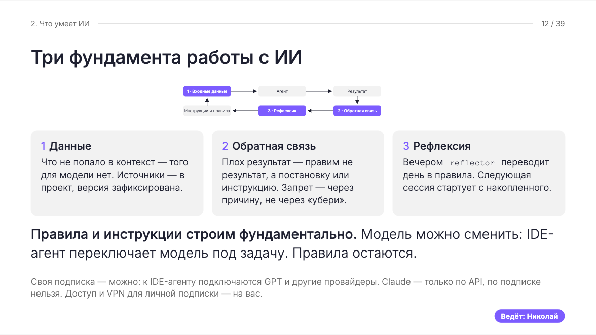

От личной практики к корпоративному внедрению
К тому моменту я уже использовал агентов в собственной работе: подключал разные модели, организовывал взаимную проверку, накапливал опыт между сессиями. За плечами были внедрения корпоративных систем, поэтому вопросы обучения и сопровождения для меня не были новостью.
Теперь предстояло собрать рабочее место аналитика, которое даст другую скорость создания документации на ПО. Вместе с инструментами нужно было передать способ работы: как поставить задачу, проверить результат, получить помощь и сохранить найденное решение для остальных.
По мере внедрения к ролям и навыкам добавились владелец канона, выпуск обновлений, поддержка через мессенджеры и несколько уровней памяти. В статье расскажу, какие проблемы потребовали этих решений и что пришлось пересмотреть по дороге.
Боевая проверка: комплект бизнес-требований под дедлайн
Канон прошёл боевую проверку раньше, чем стал готовым продуктом. Аналитику нужно было передать заказчику комплект бизнес-требований по новому платёжному продукту: регуляторные источники обновились, а работу предстояло вести параллельно с остальными задачами. По оценке самого аналитика, вручную такой объём занял бы больше двух недель — а этого времени не было.
Мы собрали на бегу минимально работоспособный комплект: шаблон бизнес-требований, роли, навыки и инструменты. Неделю я работал копайлотом аналитика: смотрел, где агент спотыкается, и правил канон прямо под задачу. Основное время ушло не на генерацию текста, а на условия доверия к нему: по какому шаблону собирать документ, откуда брать данные, как находить коллизии и недостающие данные, что делать, если данных не хватает. Только после этого агент перестал заполнять пустоты догадками.
На этой задаче агент начал выдумывать данные, и одних инструкций оказалось недостаточно: я снизил температуру до 0,2 и top-p до 0,85. У других специалистов на других задачах хватало температуры 0,6 при том же top-p. Параметры генерации приходится подбирать под тип задачи, но основной защитой всё равно остаются источники, правила работы с недостающими данными и проверка результата.
Работу начинали на одной модели, но лимита подписки не хватало на весь объём, поэтому продолжали на модели другого поставщика и возвращались к первой после обновления лимита. Схему придумали на ходу: комплект нужно было передать в срок, и дорогая связка была решением под давлением обстоятельств, а не рекомендацией для постоянной работы.
Каждый документ вычитывал аналитик, работавший с агентом: приёмка оставалась за ним. Его замечания я переносил в инструкции, чтобы ошибки не повторялись в следующих документах. На вебинаре аналитик сама вспоминала темп работы: «четырнадцать штук… за восемь рабочих дней. Не знаю, быстро это не быстро». Позже, к передаче заказчику, комплект вырос до 17 бизнес-требований: каждый документ прошёл вычитку и публикацию в Confluence.
Главным итогом этой гонки стал не только комплект. Канон, выдержавший реальный дедлайн, стал проверенным инструментом: следующие специалисты подключались уже к обкатанным ролям и правилам, а их ошибки продолжали улучшать канон.
С чем я пришёл к этой задаче
К этому моменту у меня уже был опыт разработки и внедрения ERP, интеграции корпоративных систем и управления разработкой. Я привык разбирать работу между подразделениями: откуда приходят данные, кто принимает решения, кому передают результат и где возникают переделки.
Классические методологии разработки я проходил на практике: Agile с декомпозицией на спринты и пользовательские истории, Waterfall с поэтапными шлюзами, управление задачами в Jira. Для меня это не термины из учебника — я знаю, как разбить большую задачу на короткие итерации с понятными критериями приёмки, как провести планирование и ретроспективу и где выбранный подход ломается и почему.
Позже к этому добавились проекты внедрения ИИ и собственная практика работы с агентами.
На своём рабочем месте я использовал разные приложения и модели, поручал агентам разработку, исследование и проверку результатов друг друга. Постепенно появились собственные роли, навыки, инструменты и память между сессиями. Благодаря этим наработкам к задаче автоматизации работы аналитиков я подошёл уже с набором решений, которые мог применять и развивать.
При этом многое в личной практике держалось на моём участии. Я ставил задачу, замечал, что агент ушёл не туда, объяснял ошибку, решал, когда подключить другую модель, а когда остановить очередной круг проверки. Часть правил была записана, часть я каждый раз добавлял по ситуации.
На личном опыте я понял, что качество взаимодействия с агентом начинается с постановки задачи и обратной связи. Для рабочего места специалиста мне хотелось пойти дальше — сделать так, чтобы удачное решение или исправленная ошибка не оставались внутри одного разговора, а конвертировались в опыт агента, который он помнит и использует.
Отсюда возникла задача собрать общую основу работы: определить роли агентов, закрепить способы выполнения задач, подключить инструменты и организовать сохранение опыта. Порог входа для аналитика — не курс промпт-инжиниринга, а несколько шагов подключения: дальше он занимается содержанием документации, а всю обвязку и правила работы агента берёт на себя канон.
Так я начал выстраивать корпоративный стандарт рабочего места аналитика.
Канон и структура проекта
Рабочее название пилота — «Золотой стандарт»: общий для всего департамента набор ролей, навыков, инструментов и правил работы агентов. Впоследствии этот набор стали называть просто «Канон». Он должен был работать независимо от проекта и избавить специалиста от самостоятельной настройки рабочего места.
Подготовка сводилась к нескольким простым шагам и паре промптов агенту: даёшь команду — и идёшь пить кофе, а по возвращении получаешь готовое рабочее место: окружение развёрнуто, зависимости и нужные библиотеки установлены, роли, навыки и инструменты на месте — можно сразу брать задачу. Вместе с обвязкой я вводил единый стандарт структуры каталогов и файлов проектов, чтобы специалисты и агенты могли ориентироваться в материалах по общим правилам.
Первоначально я предложил упрощённую структуру проекта из трёх слоёв: исходные данные, рабочие черновики и выпускаемые артефакты. Она отделяла материалы для анализа от результатов работы и задавала агенту понятные места хранения.
Когда к работе подключились коллеги-аналитики, их практика и замечания повлияли на мой выбор структуры. Агент редко готовит подходящий результат с первой попытки: документ проходит несколько итераций, появляются замечания, уточняются исходные данные, повторяется сборка. Структура проекта должна была поддерживать этот процесс.
Мы пришли к отдельным разделам по типам документов и рабочим каталогам конкретных документов внутри них. Рабочий текст в Markdown и его сборки в DOCX хранятся рядом, в подкаталогах md/ и docx/. Я закрепил явный контракт: все эти материалы априори являются черновиками. Успешная сборка файла сама по себе не меняет его статус.
Для принятого комплекта релиза мы выделили отдельный каталог. В него попадают проверенные и принятые специалистом версии документов. Так актуальный комплект можно выгружать и сопровождать целиком, поддерживая один источник истины, без необходимости каждый раз собирать нужные версии по рабочим каталогам.
От рабочего документа к принятому комплекту
БТ-ЦР-ДБОФЛ-002-Пополнение-СЦР-Клиента-ФЛ/md/рабочий текстdocx/сборки документа
Роль, навык и инструмент
При проектировании канона я разделял профессиональную роль и методики выполнения конкретных задач. В роли оставлял общую инструкцию: за что отвечает агент, где заканчиваются его полномочия, как он работает с неопределённостью и какие навыки подключает под задачу.
Подробный порядок подготовки результата выносил в навыки. Например, описание пользовательского интерфейса, подготовка Use Case и описание API требуют разных правил и проверок. Агент в роли аналитика подключает нужную методику по ходу работы. Это позволяет расходовать контекст на текущую задачу, подгружая подробные инструкции тогда, когда они понадобились.
Такое разделение помогало учитывать различия проектов. Один и тот же тип документа может иметь разные шаблоны, состав разделов и требования заказчика. Общая роль при этом сохраняется, а навык применяется вместе с инструкциями, шаблоном и настройками конкретного проекта.
Повторяемые технические операции я выносил в инструменты — скрипты, которые агент запускает по правилам навыка: разобрать исходный файл, проверить XML, создать структуру каталогов или собрать DOCX. Один инструмент мог использоваться в нескольких навыках.
Это соглашение я закрепил в навыке project-layout и инструментах создания и проверки структуры. Роль layout-builder выбирает подходящую раскладку, а скрипт scaffold_layout.py создаёт её по заданным правилам. Адреса источников, шаблонов, рабочих документов и релиза сохраняются в паспорте проекта. Остальные роли и навыки обращаются к нему, чтобы понимать, где читать материалы и куда сохранять результаты.
Качество результата зависело от согласованности всей связки: роль задаёт ответственность и маршрут, навык — методику, инструмент выполняет операцию, шаблон определяет форму, а формируемый артефакт собирается на основе утверждённых источников и требований.
У каждого элемента — своя работа
Результат — артефакт, собранный на основе согласованной работы этих элементов.
Оцифровка: сохранить смысл источника
Оцифровка документов стала фундаментом рабочего места аналитика. Это глаза агента: полноценная работа начинается с возможности достоверно прочитать исходные материалы. Генерация документа опирается на анализ исходных данных, поэтому они должны быть представлены в машиночитаемом виде с сохранением содержания и структуры.
Этому процессу я уделил особое внимание. Недостаточно извлечь из PDF или DOCX последовательность абзацев. Нужно корректно передать таблицы, схемы и связи между элементами документа. Потерянная строка, неверно прочитанное объединение ячеек или пропущенная ветка процесса могут повлиять на требования, которые агент сформирует на следующем этапе.
Для таблиц я закреплял требование сохранять их логическую целостность. Если одна таблица продолжается на нескольких страницах, в машиночитаемом представлении она должна оставаться одной таблицей. Нужно сохранять строки, столбцы, объединения ячеек и соответствие данных заголовкам. Граница страницы не должна превращаться в границу смысла.
Это не абстрактное требование — оно выросло из практики. Коллеги привыкли работать в DOCX, и этот же формат нужен был для согласования документов с заказчиком. При переводе их шаблонов в машиночитаемый вид я столкнулся с тем, что они ломаются в самом уязвимом месте: там, где сложная таблица имеет нелинейную структуру подчинения. Строки-родители содержат строки-дети, у тех есть свои дети, и всё это ещё делится на группы, которые нужно сопоставлять с данными из XSD и XML — регламентов регулятора. Плоское представление таблицы такую иерархию теряло.
Решением стал HTML: представление таблицы средствами <table> сохранило рендеринг в человекочитаемый формат и справилось с передачей иерархии строк. Так в навыке оцифровки закрепилось правило: таблицы — только HTML.
Для схем важно сохранить участников, действия, связи, условия и направления переходов. В зависимости от вида схемы её можно представить средствами PlantUML, draw.io или BPMN. Такое представление позволяет агенту анализировать процесс и использовать его при подготовке документации. Корректность переноса при этом необходимо сверять с оригиналом: синтаксически правильная схема ещё не подтверждает, что все связи переданы верно.
Поэтому оцифровку я оформлял как отдельный навык с инструментами извлечения и проверки, правилами обработки сложных элементов и фиксацией неоднозначностей. Его задача — подготовить достоверную основу, на которой смогут работать остальные роли и навыки.
Анализ источников и подготовка документов
После оцифровки начинается содержательная работа с источниками. Здесь я выделил общий навык technical-analysis: он задаёт порядок исследования, отделяет подтверждённые факты от предположений, помогает регистрировать вопросы и разбирать противоречия. Для каждого существенного вывода я требовал сохранять связь с исходным материалом, чтобы аналитик мог проверить, на каком основании агент включил его в документ.
Пробелы в исходных данных агент регистрирует в отдельном файле открытых вопросов — open-questions.md. Каждый вопрос получает идентификатор, описание того, что требуется уточнить, и текущий статус. Этот файл сохраняется в проекте, чтобы вопросы и полученные ответы не терялись при переходе между сессиями.
Если часть документа подготовлена до получения ответа, в соответствующем месте агент обязан оставить явную пометку со ссылкой на открытый вопрос. Специалист должен видеть, какие положения сформированы при недостаточных данных, что требует уточнения и где находится описание вопроса. Такая пометка не разрешает агенту самостоятельно придумывать недостающий ответ.
При продолжении работы агент обращается к реестру, учитывает уже полученные ответы и сохраняет открытые вопросы до их разрешения. После уточнения обновляются статус вопроса и связанные с ним фрагменты документа. Если источники противоречат друг другу, агент фиксирует расхождение и показывает его влияние на результат.
На этой общей основе я создавал навыки подготовки конкретных артефактов.
- Для бизнес-требований важны цели, границы изменения и ожидаемое поведение системы.
- Для Use Case — участники, предусловия, основной и альтернативные сценарии.
- Для описания интерфейса — элементы экрана, состояния и реакции на действия пользователя.
- Для API — параметры, структуры данных, ответы и обработка ошибок.
Каждый вид результата требует своей методики и набора проверок.
При этом документы описывают одну систему и должны согласовываться между собой. Поэтому я предусматривал проверку связей между артефактами: одинаково ли названы сущности, соответствует ли поведение интерфейса сценарию, согласованы ли входные и выходные данные. Проектные шаблоны и инструкции определяли конкретную форму этих описаний.
Сборка DOCX и проверка результата
Для сборки документов в принятом оформлении я выделил навык docx-layout. Он связывал подготовленный Markdown с шаблоном и профилем конкретного проекта. Шаблон задавал структуру и оформление документа, а профиль — параметры их применения при сборке: стили, нумерацию, размещение таблиц, рисунков и служебных элементов.
Этот навык я связал со скриптами проверки и сборки. Например, preflight.py проверяет необходимые условия и входные файлы, а build_docx.py выполняет сборку. Агент получает через навык порядок действий: что подготовить, какой инструмент запустить, какие параметры передать и что проверить в результате.
Особое внимание пришлось уделить пониманию шаблона. Недостаточно выбрать похожий шрифт и расставить заголовки. Нужно сохранить состав разделов, структуру таблиц, объединения ячеек, подписи, оглавление и метаданные. Эти требования должны одинаково пониматься методикой подготовки документа и инструментом его сборки.
К результату я предъявлял два вида требований: корректность содержания и корректность представления. После сборки нужно проверить, что таблицы и схемы сохранились, заголовки и нумерация работают, а документ соответствует назначенному шаблону. Часть проверок выполняют скрипты, часть требует визуального просмотра и оценки специалиста.
Замечания к результату становились основанием для исправления инструкции, профиля или самого инструмента — в зависимости от причины. Затем документ собирался повторно: важно было убедиться, что исправление воспроизводится при следующей генерации.
Сборка — ещё не приёмка
- Подготовить текст и назначенный шаблон.
- Собрать рабочий DOCX.
- Проверить содержание и оформление, исправить замечания.
- Передать документ на приёмку специалисту.
- Поместить принятый документ в комплект релиза.
Замечания возвращаются в инструкцию, профиль или инструмент. Затем документ собирается повторно.
При этом документ продолжает жить после генерации. Его читают, согласуют, передают в разработку и тестирование. Поэтому в требования к результату пришлось включать потребности следующих участников. То, что помогает аналитику собрать документ, не обязательно полезно разработчику, которому нужно разобраться в требованиях.
Отдельное правило добавил случай передачи в разработку, когда передали Markdown аналитика: в файле остались ревизионные комментарии и метаданные для сборки DOCX. Сгенерировать по нему код агент не смог — лишняя разметка съедала контекст, а разбор конфуза занял половину встречи. Отсюда родилась задача: добавить навык очистки артефактов, чтоб в разработку шел чистый файл с фиксированной структурой, а вместо картинок содержал исходники PlantUML. То, что удобно читать человеку, не всегда удобно обрабатывать машине.
Разделение на роли, навыки, инструменты и проверки позволяло разбирать ошибки предметно. Если результат не устраивал, нужно было понять, что именно подвело: постановка задачи, инструкция, инструмент или проверка. От этого зависело, где исправлять причину.
По мере работы канон менялся: появлялись новые навыки, уточнялись инструкции, исправлялись инструменты. И здесь возник следующий вопрос: как принимать улучшения от пользователей, сохраняя согласованность общей системы? Для этого я выделил владельца канона.
Зачем канону понадобился владелец
Настройка агентной обвязки — работа на стыке промпт-инжиниринга и программирования. Для неё нужна насмотренность: понимание поведения моделей, устройства инструментов и последствий изменения инструкций. Аналитики — специалисты в своей области. Требовать от них ещё и этой компетенции означало бы создавать дополнительную нагрузку.
Поэтому я выделил владельца канона в отдельный репозиторий со своими правами, ролями, навыками и инструментами. Он отвечает за развитие корпоративных стандартов работы с агентами, принимает предложения, проверяет изменения и выпускает обновления.
Принятые исправления входят в обновления, проверку которых я настроил при начале работы. Специалисту не нужно вручную собирать новые версии инструментов. А владельцу важно довести изменение до рабочего места вместе с актуальной инструкцией.
Улучшение проходит через владельца
- Предложение
- Проверка владельцем
- Принятое изменение
- Обновление рабочих мест
Как я использовал взаимное ревью агентов
При разработке канона я использовал разные приложения и экспериментировал с моделями разных поставщиков: подбирал те, которые справлялись с конкретными задачами качественно и за минимальное количество итераций. Здесь важно различать приложение, в котором работает агент, и подключённую к нему модель.
- Приложения и рабочие среды: KiloCode (Kilo), Cursor, Claude Code, Codex, Grok и Hermes. Kilo и Cursor я использовал в IDE, Codex, Grok и Hermes — в роли копайлотов.
- Модели и семейства моделей: Claude, Qwen, Deepseek, Grok; также тестировал GLM и Kimi.
- Другие тесты из моей практики: модели от Sokana и пакет от Kilo, где хорошо себя показал Step 5 Preview (названия требуют уточнения).
Хорошо показала себя связка, в которой западная модель проверяет работу китайской. Это наблюдение из моей практики, а не универсальное правило выбора моделей.
Подготовленное решение передавал другому агенту на проверку, замечания возвращал исполнителю, затем проверял исправления.
По моему опыту, участие моделей разных поставщиков давало более качественный результат. Такое ревью стало постоянной частью работы: другой агент мог заметить пропущенное условие, противоречие в инструкции или ошибку, которую исполнитель не увидел.
Но у этого подхода есть обратная сторона. Агенты способны долго обсуждать улучшения, предлагать новые проверки и переделывать уже работающее решение. Без ограничения итераций ревью рискует превратиться в бесконечный спор.
Поэтому важно задавать границы проверки и условие её завершения. Каждое следующее изменение должно закрывать конкретный недостаток. Если агенты продолжают расходиться во мнениях, решение остаётся за мной.
Ревью с условием завершения
- Исполнитель готовит решение.
- Другой агент проверяет результат.
- Конкретные замечания возвращаются исполнителю.
- Исправления проходят повторную проверку.
При расхождении мнений решение остаётся за человеком. Согласие моделей не заменяет проверку на задаче.
Польза такого взаимодействия для меня — в возможности посмотреть на решение с разных сторон. Само по себе согласие нескольких моделей ещё не доказывает, что оно работает: результат всё равно нужно сверить с требованиями и проверить на задаче, ради которой он создавался.
Где канон ломался
Стандарт, не проверенный сбоями, даёт ложную уверенность. Вот несколько случаев, после которых канон менялся.
Публикацию я сломал сам. Рабочая схема публикации в Confluence существовала на машине специалиста, а я решил ввести единое правило для всех: забирать токен не из фиксированного места, а через переменную. Перемудрил — публикация перестала работать, и откат тоже помог не сразу: простой занял около трёх дней. После этого я ввёл правило: перед любой унификацией прогонять регрессионную проверку типовых сценариев агента и выкатывать изменение только после неё.
В поддержке всплыл «парадокс настройки». Специалист три часа «ругалась» с агентом над задачей, которую разработчик решает руками за двадцать минут, — и получила нужный результат. Со стороны это выглядит как потеря, но именно этот случай сформулировал главный аргумент канона: качество определяет не только модель, но и обвязка — роль, инструкция, процесс. Отсюда принцип: не приносить специалисту готового агента, а настраивать его вместе с оператором.
Агент «обманул» на онбординге: на просьбу подтвердить свою роль назвал чужую. Причина была в шуме: ролевые инструкции несли следы проектов прежнего заказчика. Инструкции вычистили, а в каноне закрепился принцип «чем точнее инструкция, тем меньше галлюцинаций».
Ещё один сбой родился из моего же правила: я требовал выводить результат в формате diff. У инструмента был собственный просмотрщик diff, и агент ушёл в цикл: перестал создавать файл и выводил весь текст документа в экран. Правило пришлось убрать из инструкций — напоминание о том, что инструкция, написанная без учёта поведения инструмента, становится ловушкой.
Как инструкции доходили до пользователей
Параллельно с развитием канона я занимался его внедрением: разбирал затруднения специалистов и дополнял инструкции по результатам этих разборов. Для этого была настроена публикация в Confluence и создан HTML-навигатор, который поставлялся вместе с каноном.
Персональные треки и сессии помогали обнаружить затруднения, которые я не предвидел при разработке канона. По результатам этих разборов я уточнял инструкции и обучение. При этом аналитику не требовалось самому осваивать устройство агентной обвязки: разбор её технических причин оставался моей задачей.
Навигатор стал инструментом онбординга, дал пользователю точку входа: как начать работу, какую роль выбрать, как выполнить нужную операцию. По мере появления вопросов и решения проблем я обогащал его пояснениями. Найденный ответ становился доступен остальным специалистам, а не оставался в личной переписке.
Для обучения специалистов я подготовил и провёл совместно с коллегами вебинар «ИИ в работе аналитика: подход и рабочий цикл». В программу вошли устройство рабочего места, выбор ролей, работа с материалами проекта и рефлексия. Коллеги рассказали о своём практическом опыте применения канона, поделились впечатлениями и метриками.
Данные. Обратная связь. Рефлексия.


Обратная связь была не только одобрительной. Одна аналитик прямо сказала про обучение агента собирать DOCX без нормального шаблона артефакта: «якорю, а не ускоряю». Другая призналась, что не сразу научилась распределять работу между ролями: «Ну реально вот сидеть и постоянно вот это вот пилить. Я уже третью попытку делаю… у меня не хватает навыка объяснять ему, кто это может сделать». Третья ценила именно делегирование: «Я могу поставить задачу и дальше переключиться на какие-то встречи… а оно там находит проблему, показывает варианты решения».
За месяц каноном начала пользоваться половина коллектива.
Но, когда человек уже столкнулся с ошибкой, одной инструкции могло быть недостаточно. Для таких ситуаций я подключил поддержку через Telegram: специалист задаёт вопрос прямо в мессенджере и получает инструкцию, что делать.
Как я организовал поддержку через агентов
Во время внедрения обращения поступали не только в backlog, но и напрямую в Telegram. Специалист присылал лог или описывал проблему, с которой столкнулся. Зачастую нужно было продолжить срочную работу, не дожидаясь, пока выйдет исправленный релиз канона.
На такие обращения отвечал телеграм-бот: он имел доступ к репозиториям канона, понимал контекст, мог запросить логи у пользователя и вернуть инструкцию, что делать. За ботом стояли агенты на моём хосте, подключённые через разработанный мной сервис «коммутатор». Он позволяет агентам разных вендоров читать переписку с нужным пользователем и по моему поручению продолжать диалог от моего имени.
Агент мог изучить историю обращения и логи, задать уточняющие вопросы и подготовить промпт для рабочего агента специалиста: что проверить, какое действие выполнить и как продолжить задачу. Пользователю не приходилось самостоятельно разбираться во внутреннем устройстве канона.
Когда меня не было у компьютера, сервис мониторинга мессенджеров уведомлял о новых обращениях. Я мог удалённо поручить агентам заняться проблемой, не дожидаясь моего возвращения.
От обращения — к продолжению работы
- Специалист сообщает о проблеме.
- Коммутатор связывает переписку с агентами владельца.
- Владелец поручает агенту заняться обращением.
- Агент разбирает контекст и готовит инструкцию.
- Специалист получает порядок действий для продолжения работы.
Общая проблема становится основанием для изменения канона.
Такая поддержка давала материал и для развития канона. Временное решение помогало конкретному человеку, а обнаруженная общая проблема становилась основанием для изменения роли, навыка или инструмента.
Автоматизацию поддержки я считаю обязательной при массовом внедрении. Если специалист регулярно застревает и ждёт помощи, сэкономленное на работе с ИИ время уходит на разбор ошибок и ожидание ответа. Так можно обнулить всю пользу проекта и потерять доверие пользователей к инструменту.
Анализ расхода токенов
При сопровождении рабочего места я учитывал не только затруднения пользователей, но и расход токенов. В компании с большим штатом себестоимость использования ИИ может вырасти в сумму, которая, если не обнуляет весь рост эффективности, то точно делает результат более дорогим.
Чтобы увидеть, куда уходит бюджет, я подключил связку LiteLLM + Langfuse для анализа обращений к моделям и расхода токенов. Первая находка: расход начинается до полезной работы. Постоянная часть одного запроса к агенту — инструкции рабочего места и системный промпт — достигала десятков тысяч токенов; по замерам одного специалиста, медиана контекста была около ста тысяч токенов, а отдельные сессии доходили до нескольких сотен тысяч.
Вторая находка — про сессии. Кэш не всегда перечитывается целиком, но длинная сессия всё равно съедает бюджет: по инструкции агент собирает артефакт из исходных данных, а источников у аналитика — на миллионы токенов. Пока кэш тёплый, повторная обработка дёшева; специалисты держали сессии открытыми по несколько дней, кэш протухал, и каждый следующий шаг заново пересчитывал накопленный контекст по полной цене. В отдельных случаях рабочий день специалиста обходился до 20 USD, а на работе с описанием API за день сгорел лимит около 30 USD.
Третья находка — навигация. Если каталоги не имеют индексов (README.md, INDEX.md), агент открывает файл за файлом, чтобы понять структуру кода при работе над описанием, и лимиты подписки сгорают на чтении буквально на глазах. Я дал агенту правило: если он прочитал файл, которого нет в индексе, — внести короткую пометку о нём в README.md каталога. Знание о структуре остаётся в репозитории, повторные расходы на чтение прекращаются, а поиск нужного ускоряется. Особенно это заметно на коде, который писали люди без расчёта на быструю навигацию агента.
Исправления я вводил как правила работы, а не разовые акции. После генерации артефакта не держать сессию открытой: мелкие правки дешевле вносить в новой сессии, где не нужен весь контекст с исходными данными. Это правило я объяснил на инструктаже, написал в общий чат и несколько раз проговаривал на личных встречах: правило, оставленное в одной рассылке, не приживается. Заметный эффект дала пересборка памяти агентов: короткая память тезисами, полный файл подтягивается по релевантности, плюс правки инструкций — расход уменьшился в два раза. К этому я пришёл, используя у себя векторную память агента, которая подгружает только релевантные куски памяти. Я уже понимал и другую сторону самообучаемости агентов, которая могла забить контекстное окно до предела. Это результат одного кейса, а не средняя по команде.
Как я разделил память пользователей и владельца канона
Память понадобилась на двух уровнях: для работы специалистов над проектами и для развития самого канона. У этих уровней разные задачи.
Рефлексия как стандарт
Одним из стандартов канона стала рефлексия. На стороне пользователя достаточно дать агенту команду: «Сделай рефлексию». Она запускает разбор текущей сессии:
- что оказалось полезным;
- какие ошибки возникли;
- что необходимо сохранить, чтобы улучшить взаимодействие с пользователем и не воспроизводить ошибки в других сессиях и проектах.
Я настроил разделение выводов на три слоя:
- Опыт текущего проекта. Локальные требования, исключения и договорённости. В другом проекте они могут оказаться неприменимыми или даже вредными, поэтому должны оставаться в пределах своего проекта.
- Опыт, полезный в других проектах. Приёмы работы и уроки, которые можно использовать шире.
- Предложения по изменению канона. Необходимые правки ролей, навыков и инструментов, которые передаются владельцу на рассмотрение.
Так рефлексия помогает распространять достижения отдельных специалистов на команду. При этом локальная договорённость не превращается автоматически в общее правило: изменения канона проходят через владельца.
Память в проектах пользователей
Пользователи канона работают в KiloCode. Здесь важно, чтобы при переходе между сессиями агент сохранял решения по проекту, учитывал замечания специалиста и не повторял разобранные ошибки.
Для этого я предусмотрел проектную память и рефлексию. В памяти проекта остаются его требования, договорённости и особенности. Полезный для других проектов опыт выделяется отдельно, а предложения по изменению ролей, навыков и инструментов направляются в backlog.
Так сохраняется граница: частное решение помогает продолжать конкретный проект, но не становится правилом для остальных.
Память владельца канона
На стороне владельца я тестировал следующие инструменты:
- IDE: плагин Kilo Code (VSCode) и Cursor;
- Co-Pilot: Codex, Grok и Hermes.
Чтобы найденное одним агентом решение не оставалось только внутри его сессии, а было доступно остальным, я организовал общую память — векторную базу с графами связей. Это минимизировало ошибки: опыт передаётся по горизонтали, между сессиями и агентами.
Информация в памяти разделена на людей, факты, эпизоды, проекты, ошибки и другие связанные сущности. Агент извлекает сведения под текущую задачу или под шаг сессии, если видит, что в контексте появились новые вводные, не загружая всю историю целиком.
Межсессионная память позволяет сопоставлять текущую задачу с прошлым опытом и подтягивать только релевантное. Для владельца канона это защита от повторения уже разобранных ошибок — так же, как и для специалиста.
Совместный доступ потребовал отдельной инфраструктуры: хаба с единственным писателем и диагностического сервиса. В испытаниях выяснилось, что успешный ответ на запись ещё не гарантирует появления данных в векторном индексе. Поэтому пришлось проверять сохранность и доступность записей, в том числе под нагрузкой и после аварийной остановки.
Таким образом, проектная и межпроектная память помогает агентам использовать сохранённые решения в следующих задачах, а память владельца канона — применять накопленный опыт для развития стандарта всего департамента. Речь об извлечении и использовании записей, а не об обучении самой модели.
Разные задачи — разные области памяти
Владелец рефлексии и институциональная память
Ещё один слой я хотел бы добавить, но пока не реализовал — владельца рефлексии. Его задачей был бы анализ рефлексии проектов и команд всей компании для формирования институциональной памяти: накопленного опыта, который помогает специалистам и агентам лучше работать вместе.
Следующий слой: институциональная память
- Опыт проектов и команд
- Владелец рефлексии
- Межпроектные уроки
Замысел, пока не реализовано.
Частично горизонтальный обмен опытом уже происходит через развитие канона. Найденная проблема приводит к изменению роли, навыка или инструмента, и исправление становится доступно другим пользователям. Но межпроектный опыт, который содержится в рефлексии, шире этих изменений.
В нём сохраняется часть компетенции самого специалиста. Работая с агентом, человек учит его извлекать из исходных данных нужный контекст, учитывать особенности предметной области, различать близкие понятия и правильно формулировать результат в артефактах. Содержательная обратная связь объясняет, почему конкретный вывод неверен, какая деталь была упущена и как следует понимать источник.
Такой опыт может оказаться полезен другим проектам даже тогда, когда он не требует изменения общей роли или навыка. Владелец рефлексии помогал бы выделять эти уроки, устанавливать границы их применимости и включать в межпроектный слой памяти. Это позволило бы распространять профессиональные находки отдельных пользователей и постепенно накапливать компетенцию взаимодействия человека и агента на уровне компании.
Рефлексия также может стать источником управленческих инсайтов о работе команды и организации процессов. Но это отдельная тема, которую я оставляю за рамками этой статьи.
Что в итоге стало рабочим местом аналитика
Начав с ролей, навыков и инструментов, я выстроил систему их применения и сопровождения. В неё вошли корпоративная структура проектов, управление изменениями канона, обновления, обучение, поддержка и накопление опыта.
Для специалиста вход в эту систему должен оставаться простым: подготовить рабочее место за несколько шагов, поставить задачу агенту, проверить результат и дать обратную связь. Разбор технических причин, развитие общих правил и выпуск исправлений — ответственность владельца канона.
Именно здесь соединились две части работы: архитектура ИИ-системы и управление её внедрением. Персональные треки и сессии становились фундаментом изменений, инструкций и обучения. Не всегда специалист может сам оценить, где корень затруднения — в задаче, инструкции или инструменте. Такой разбор и решение о следующем шаге оставались моей задачей.
Но сам по себе собранный набор ещё не говорит, сколько времени он экономит.
При этом скорость генерации документа — лишь часть результата. Важно учитывать время на проверку, исправления и дальнейшее использование. Если аналитик получил текст быстрее, а разработчик потратил больше времени на уточнения, оценивать выигрыш нужно по всей цепочке.
Поэтому я смотрю не только на то, что агент способен сделать, но и на то, как меняется совместная работа людей: насколько понятнее становится задача, меньше ли повторных ошибок и помогает ли накопленный опыт получать следующий результат быстрее.
Рамку оценки задавал бизнес-заказчик, и она была жёсткой: у внедрения ИИ он признавал только два эффекта — либо команда берёт вдвое больше заказов, либо сокращаются расходы. «Просто чтобы люди работали быстрее» самоцелью не было: скорость требовалось переводить в деньги или в высвобождённое время. На встрече с заказчиком я приводил наблюдение с проектов: когда роль, шаблоны и инструменты настроены, специалист делает за час то, что раньше занимало целый день. Но, даже такое наблюдение заказчик принимал только вместе с ответом, какой из двух эффектов оно даёт.
Главный итог не в том, что агенты начали создавать документацию быстрее человека. Важнее то, что компания получила управляемый способ накапливать опыт их применения: стандарт, который развивается вместе с практикой, и процесс, в котором удачные решения становятся частью общей системы, а не остаются у отдельных специалистов.
Заменит ли ИИ человека?
Считаю, выводы надо строить в комплексе с ответами на вопросы: заменит ли калькулятор бухгалтера, а экскаватор — землекопа? Моя практика доказывает, что — нет, человека заменить невозможно, но сместить его роль от исполнителя в создателя придётся.
Агент полезен там, где нужно:
- быстрее собрать структуру и черновик;
- проверить документ на внутренние несоответствия;
- найти связанные требования и прежние решения;
- сохранить опыт для следующих итераций.
Человек остаётся необходимым там, где нужно понять контекст, выбрать границу решения, оценить риск, принять ответственность и объяснить результат заказчику.
Ценность написания чего-либо по готовым алгоритмам будет снижаться с эволюцией ИИ, а способность придумать что-то новое не обесценится никогда.
Качество результата по-прежнему определялось тем, насколько точно поставлена задача, какие источники выбраны, как организована проверка и кто принимает итоговое решение.
Где со временем пройдёт граница между работой человека и ИИ, я не знаю. Но уже сейчас вижу, насколько результат зависит от того, чему человек способен научить свою систему в процессе работы.
Коллегам я рекомендую начинать с освоения двух базовых навыков: правильно поставить задачу и дать агенту содержательную обратную связь. Качество результата определяется тем, насколько точно поставлена задача, какие источники выбраны, как организована проверка.
Улучшение практики взаимодействия с ИИ держится на способности объяснить агенту, что он сделал не так, почему это важно и какой результат от него нужен, желательно с примером.
Профессиональная обвязка позволяет сохранить решения человека и опыт исправления ошибок, чтобы использовать их в следующих задачах. Тогда как обратная связь улучшает не только текущий ответ — она становится вкладом в будущие результаты. Именно в этом сочетании я вижу главный потенциал: профессиональное мнение человека, возможности агента и система, которая помогает им накапливать опыт.
Материалы
Скриншоты в материалах вебинара анонимизированы: имена репозиториев, данные заказчика и локальные пути скрыты.
Рабочий пример навигатора онбординга — справочная страница специалиста с разделами «Старт», «Типовые сбои», «Быстрый выбор по задаче» и «Словарь»: навигатор специалиста. По нему видно, что получает специалист в первые дни: порядок установки окружения, первый промпт роли, разбор типовых сбоев и пробелов.